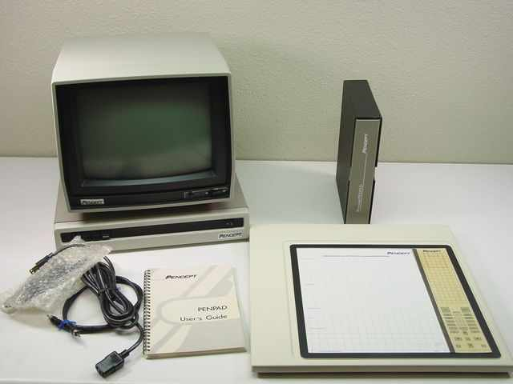

Pencept PenPad
A keyboardless terminal that read your handwriting—and your gestures—in 1982

Overview
The Pencept PenPad was a keyboardless computer terminal introduced in 1982 that replaced the keyboard with a digitizing tablet and electronic pen. Unlike simple drawing tablets, the PenPad performed real-time, user-independent handwriting recognition and interpreted pen gestures as editing commands. It was built on a proprietary "functional attribute model" of character recognition developed at MIT by Barry Blesser, Robert Shillman, and Ted Kuklinski—an approach that described characters by their perceptually meaningful visual features rather than template matching.
The PenPad 200 (1982) operated as a direct VT-100 terminal replacement, connecting via RS-232 to host minicomputers and mainframes. The PenPad 320 (1984, $1,495) targeted IBM PC/DOS users, emulating keyboard, mouse, and digitizing tablet simultaneously so existing applications like Lotus 1-2-3 and WordStar could be operated by pen. Both models pioneered gesture commands that are familiar today: circle to select, scribble to delete, caret to insert.
Pencept demonstrated the PenPad at CHI '83 and CHI '85, where the technical video "Software Control at the Stroke of a Pen" showed real-time handwriting and gesture recognition. Despite the technical achievement, the company could not build a large enough market. It merged with Numonics Corporation in 1987 and the technology faded into obscurity—a full decade before pen computing would be reborn with the PalmPilot and Apple Newton.
Deep dive
Pencept, Inc. was founded in 1980 in Waltham, Massachusetts, building on research from MIT's character recognition group. Barry Blesser, an MIT professor, had developed the "functional attribute model" of character recognition with PhD student Robert J. Shillman and researcher Ted Kuklinski. Their 1976 paper "Empirical Tests for Feature Selection Based on a Psychological Theory of Character Recognition" (Pattern Recognition, Vol. 8) established that characters could be classified by perceptually meaningful structural features—how humans read characters rather than how they write them. This made the recognition user-independent: no per-user training was needed. Blesser held fundamental patents including US 4,375,081 for multistage digital filtering of tablet input.
The PenPad used an electromagnetic digitizing tablet that captured pen-tip X,Y coordinates at a periodic rate. Pre-processing removed noise and retrace artifacts (US Patent 4,608,658 by Jean Renard Ward). The recognition engine extracted dynamic features including stroke direction, order, and functional relationships between elements, then matched them against a skeletal model of character structure. Unlike template-matching approaches used by competitors, the functional attribute model separated "embellishments" from the base stroke structure, making it robust across handwriting styles. Gesture recognition interpreted specific pen movements as commands: circling text to select it, scribbling over text to delete it, drawing arrows to indicate movement, and drawing carets to mark insertion points. The PenPad 320 could transparently emulate keyboard input for unmodified DOS applications via US Patent 4,562,304.
The PenPad 320 was priced at $1,495 (about $4,300 in 2024 dollars). It was marketed to CAD/CAM users, data entry operators, and spreadsheet users who could benefit from direct pen interaction. Despite favorable coverage and demonstration at CHI and Comdex, the market for pen computing was too small. The installed base of keyboard-and-mouse PCs was growing explosively, and handwriting recognition was not solving a pressing need for most users. Pencept lacked the resources to develop a custom operating system (unlike GO Corp's later PenPoint) and could only overlay existing keyboard-driven applications. The company merged with Numonics Corporation on May 14, 1987, and its technology was absorbed and eventually discontinued.
The PenPad pioneered several interaction concepts now taken for granted: gesture commands for text editing, user-independent handwriting recognition, and mixed-mode pen input (simultaneous pointing, writing, and gesturing). While Pencept failed commercially, the ideas resurfaced in the GRiDPad (1989), GO Corp.'s PenPoint OS, Microsoft Windows for Pen Computing, the Apple Newton (1993), and the PalmPilot (1997). The gesture vocabulary—circle to select, scribble to delete—directly anticipated the gestural interfaces of iOS and Android two decades later. The PenPad stands as evidence that the core ideas of pen computing were technically viable a full decade before the market was ready to receive them.
Team & pioneers
- Barry Blesser. MIT professor; developed the functional attribute model of character recognition; held foundational Pencept patents
- Robert J. Shillman. MIT PhD (1974); his thesis on phenomenological character attributes provided the theoretical basis; later founded Cognex Corporation
- Ted Kuklinski. MIT researcher; co-author of the 1976 Pattern Recognition paper with Blesser and Shillman
- Andrew Nilsson. Director of Marketing at Pencept; demonstrated PenPad at CHI '85
- Jean Renard Ward. Engineer at Pencept; co-inventor on retrace artifact removal and keyboard emulation patents; later maintained the comprehensive pen computing bibliography at ruetersward.com
Media
Sources
- Wikipedia: Pencept
- Jean Renard Ward: History of Pen Computing
- Jean Renard Ward: Annotated Bibliography of Pen Computing
- CHI '85 Video: Software Control at the Stroke of a Pen
- Blesser, Shillman, Kuklinski 1976: Empirical Tests for Feature Selection
- US Patent 4,562,304: Keyboard Emulation for Handwriting Terminal
- US Patent 4,375,081: Multistage Digital Filtering (Blesser)